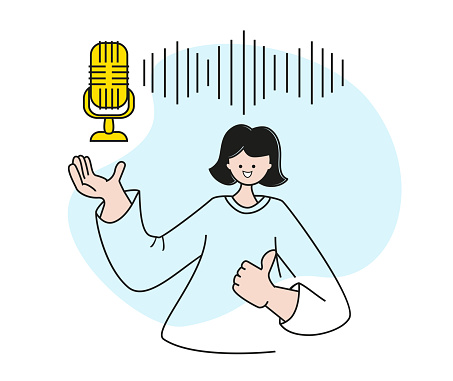
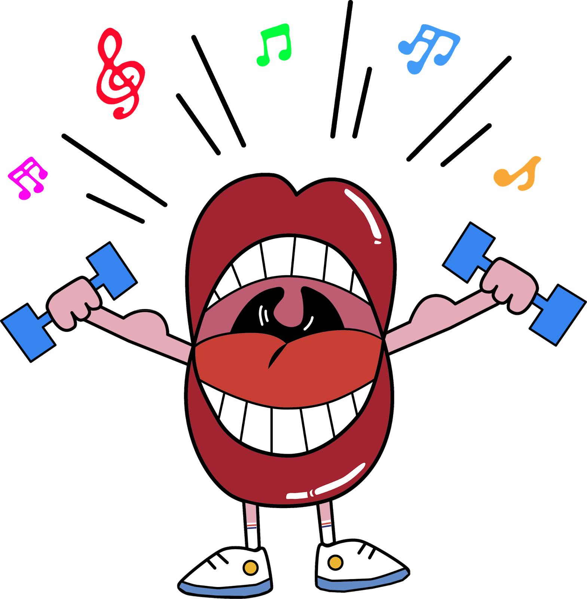
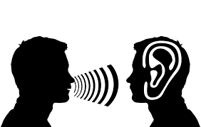

🎙️ Técnicas de Locución
Cómo mejorar la dicción frente al micrófono
La dicción es una de las habilidades más importantes para cualquier locutor.
Una voz clara transmite confianza y profesionalismo, pero los nervios o la falta de práctica pueden afectar la pronunciación.
Para mejorar tu dicción, dedica unos minutos diarios a ejercicios de vocalización.
Los trabalenguas son una herramienta divertida y eficaz: entrenan la agilidad de la lengua y la precisión en cada palabra.
También es útil leer en voz alta y grabarte para identificar errores y progresos.
Recuerda que la respiración es clave. Haz pausas naturales, respira profundamente y evita correr con las frases.
Una locución pausada y clara siempre será más efectiva que una rápida y atropellada.
El poder de la pausa en la narración
En locución, no todo es hablar sin parar. Las pausas generan impacto, permiten respirar y dan tiempo al oyente para procesar la información.
Una pausa bien colocada puede transmitir emoción, dar fuerza a un mensaje o preparar al público para lo que viene.
Es un recurso que diferencia a un narrador plano de uno que atrapa la atención.
Practica leer textos y marcar las pausas estratégicas. Escucha a narradores profesionales y observa cómo usan el silencio como parte de su discurso.

Cuidado de la voz para locutores
La voz es la herramienta principal de un locutor, por eso requiere cuidados especiales.
Mantenerse hidratado, evitar forzar la garganta y descansar adecuadamente son hábitos esenciales.
Antes de grabar, realiza calentamientos vocales: escalas suaves, ejercicios de respiración y movimientos de mandíbula.
Esto ayuda a prevenir lesiones y mejora la calidad del sonido.
Evita el consumo excesivo de café, alcohol o tabaco, ya que resecan y afectan las cuerdas vocales.
Una voz sana es el reflejo de buenos hábitos diarios.
Locución en radio vs. locución comercial
Aunque ambas disciplinas usan la voz como medio, tienen estilos muy distintos.
La radio busca cercanía y naturalidad, mientras que la locución comercial suele ser más persuasiva y dinámica.
En radio, el locutor acompaña al oyente, crea confianza y transmite emociones cotidianas.
En publicidad, la voz debe captar la atención en segundos y convencer al público de una acción inmediata.
Explorar ambos estilos te permitirá descubrir cuál se adapta mejor a tu personalidad y ampliar tu versatilidad como profesional de la voz.

Variedad en la entonación
Un tono monótono puede aburrir al oyente. La entonación variada mantiene la atención y transmite emociones.
Juega con la intensidad, el ritmo y las pausas para dar vida a tu narración.
Escucha grabaciones de narradores profesionales y analiza cómo modulan su voz.

Sonrisa al hablar
Aunque no se vea, la sonrisa se percibe en la voz y transmite cercanía.
Sonreír mientras hablas genera confianza y calidez en tu audiencia.
Practica leer textos con una ligera sonrisa para notar la diferencia en el tono.
Preparación del guion
Un locutor preparado transmite seguridad y profesionalismo.
Marca previamente dónde enfatizar, pausar o cambiar el ritmo en tu guion.
Esto evita improvisaciones poco efectivas y mejora la calidad del mensaje.

calentamiento vocal
La voz es un instrumento que necesita preparación antes de usarse.
Realiza escalas suaves, ejercicios de respiración y movimientos de mandíbula.
Estos hábitos previenen lesiones y mejoran la calidad del sonido.

Escucha activa
Grábate y analiza tu desempeño para detectar muletillas o tonos poco naturales.
La autoevaluación constante es clave para mejorar como locutor.
Escuchar a otros profesionales también te dará nuevas ideas y técnicas.